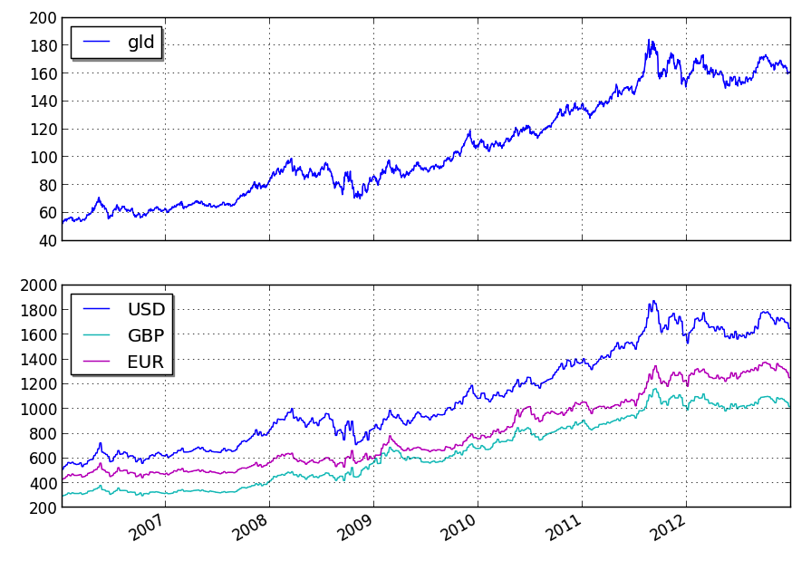

The purpose of this example is to show how to integrate any time-series data in CSV format into a strategy.
We’ll use the following CSV data from Quandl: http://www.quandl.com/OFDP-Open-Financial-Data-Project/GOLD_2-LBMA-Gold-Price-London-Fixings-P-M
from pyalgotrade import strategy
from pyalgotrade import plotter
from pyalgotrade.tools import yahoofinance
from pyalgotrade.feed import csvfeed
import datetime
class MyStrategy(strategy.BacktestingStrategy):
def __init__(self, feed, quandlFeed, instrument):
strategy.BacktestingStrategy.__init__(self, feed)
self.setUseAdjustedValues(True)
self.__instrument = instrument
# It is VERY important to add the the extra feed to the event dispatch loop before
# running the strategy.
self.getDispatcher().addSubject(quandlFeed)
# Subscribe to events from the Quandl feed.
quandlFeed.getNewValuesEvent().subscribe(self.onQuandlData)
def onQuandlData(self, dateTime, values):
self.info(values)
def onBars(self, bars):
self.info(bars[self.__instrument].getAdjClose())
def main(plot):
instruments = ["gld"]
# Download the bars.
feed = yahoofinance.build_feed(instruments, 2006, 2012, ".")
# Load Quandl CSV downloaded from http://www.quandl.com/OFDP-Open-Financial-Data-Project/GOLD_2-LBMA-Gold-Price-London-Fixings-P-M
quandlFeed = csvfeed.Feed("Date", "%Y-%m-%d")
quandlFeed.setDateRange(datetime.datetime(2006, 1, 1), datetime.datetime(2012, 12, 31))
quandlFeed.addValuesFromCSV("quandl_gold_2.csv")
myStrategy = MyStrategy(feed, quandlFeed, instruments[0])
if plot:
plt = plotter.StrategyPlotter(myStrategy, True, False, False)
plt.getOrCreateSubplot("quandl").addDataSeries("USD", quandlFeed["USD"])
plt.getOrCreateSubplot("quandl").addDataSeries("EUR", quandlFeed["EUR"])
plt.getOrCreateSubplot("quandl").addDataSeries("GBP", quandlFeed["GBP"])
myStrategy.run()
if plot:
plt.plot()
if __name__ == "__main__":
main(True)
this is what the output should look like:
2006-01-01 00:00:00 strategy [INFO] {'USD': 513.0, 'GBP': 298.204, 'EUR': 433.533}
2006-01-03 00:00:00 strategy [INFO] 53.12
2006-01-04 00:00:00 strategy [INFO] 53.3
2006-01-05 00:00:00 strategy [INFO] 52.34
2006-01-06 00:00:00 strategy [INFO] 53.72
2006-01-08 00:00:00 strategy [INFO] {'USD': 535.25, 'GBP': 302.572, 'EUR': 440.173}
2006-01-09 00:00:00 strategy [INFO] 54.6
2006-01-10 00:00:00 strategy [INFO] 54.06
2006-01-11 00:00:00 strategy [INFO] 54.53
2006-01-12 00:00:00 strategy [INFO] 54.43
.
.
.
2012-12-19 00:00:00 strategy [INFO] 161.69
2012-12-20 00:00:00 strategy [INFO] 159.73
2012-12-21 00:00:00 strategy [INFO] 160.33
2012-12-23 00:00:00 strategy [INFO] {'USD': 1651.5, 'GBP': 1019.256, 'EUR': 1253.701}
2012-12-24 00:00:00 strategy [INFO] 160.62
2012-12-26 00:00:00 strategy [INFO] 160.78
2012-12-27 00:00:00 strategy [INFO] 161.16
2012-12-28 00:00:00 strategy [INFO] 160.54
2012-12-30 00:00:00 strategy [INFO] {'USD': 1657.5, 'GBP': 1027.206, 'EUR': 1253.024}
2012-12-31 00:00:00 strategy [INFO] 162.02
and this is what the plot should look like:
you can get better returns by tunning the Bollinger Bands period as well as the entry and exit points.